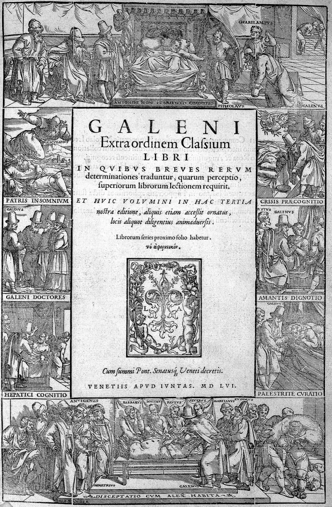
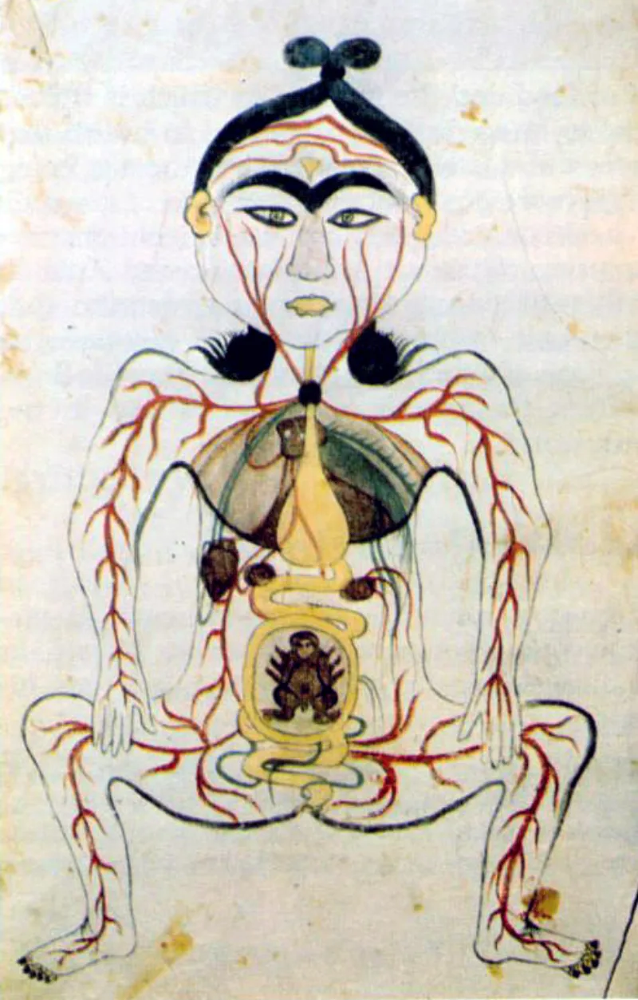
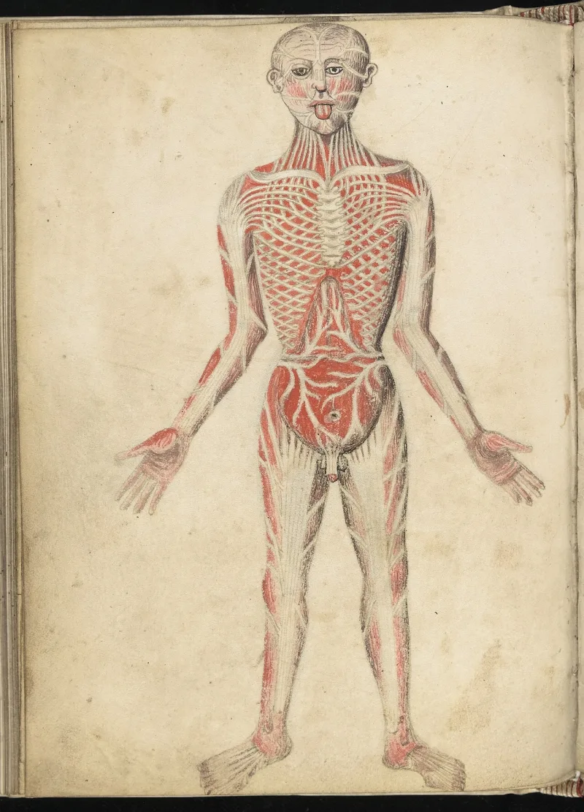

No good counter-argument has been published by Muslim scholars.
Quran 86:5-7 says man is made from "a gushing fluid, proceeding from between the backbone and the ribs." Quran 23:14 gives a sequence: drop, then clinging clot, then chewed lump, then bones, then bones clothed with flesh.
Semen is made in the testes, not the torso. The Greek view was that it descends from the region of the back, and classical tafsir read 86:7 anatomically.
The stage list tracks Galen, the Greek physician whose medicine dominated the region. It even keeps Galen's mistake: bone forming first, then being clothed with flesh.
In reality bone and muscle develop together.
Medieval Arabic medicine mapped the Quran's terms onto Galen's stages directly. That is not a Christian claim.
It is what the physicians themselves wrote.
IslamQA 118879 and Maurice Bucaille answer on both verses. Sulb and tara'ib may be a figure of speech for the whole torso, or the man's loins and the woman's chest.
Some argue they mark where the reproductive organs first form, near the kidneys, before they descend. On 23:14, the stages are broad visual descriptions for a 7th-century audience.
Alaqah means clinging thing, which fits implantation, and then need not be strictly sequential. Keith Moore endorsed the fit with modern embryology.
Strong for you, but keep it precise. No reading rescues fluid coming from between backbone and ribs.
Keith Moore's endorsement came in a Saudi-funded setting and is not accepted by scientists generally. The iERA paper on this was withdrawn and revised after criticism.
A broad description that repeats the exact errors of the era's medicine looks like the era's medicine.
"If the Quran is ahead of its time here, why does it match Galen exactly, mistakes and all?"



They say the words cover the whole torso, and the stages are plain description.
IslamQA 118879, Maurice Bucaille and the iERA embryology paper answer both passages. On 86:5-7, sulb and tara'ib may be a figure for the whole torso. Or they may mean the man's loins and the woman's chest, so the fluid of both parents. Some modern writers argue the terms mark where the sex glands first form, near the kidneys, before they descend.
On 23:14, the stages are broad visual descriptions, pitched for a 7th-century audience. Alaqah means clinging thing, which is right for implantation. And then need not be strictly in order. Keith Moore endorsed the fit between these terms and modern embryology.
Strong for you, but keep it narrow: no reading rescues backbone and ribs.
These rereadings come after the fact. The old commentators read 86:7 as anatomy. And no reading rescues fluid gushing from between backbone and ribs.
On the stages, the order matches Galen. It even shares Galen's own bones-then-flesh mistake. For hundreds of years, Muslim doctors used the Quran's terms to translate Galen's stages.
Keith Moore backed it in a Saudi-funded setting. Scientists at large do not accept that. The iERA paper was withdrawn and revised after it was criticised. A broad word-picture that repeats the exact wrong scheme of the era's Greek medicine looks like a human source.